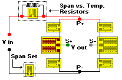

Span Set
Span SetSpan & Span Shift with Temperature, Simultaneous
Circuits Refinements command
General Considerations
Span Shift with Temperature Change
Span Shift Compensation Techniques
This is a simultaneous calculation of span shift with temperature change, 3 points and span set. The entry of variables is the same as span shift with temperature change, 3 points with the addition of a value for desired span. Desired span must be lower than the measured span, bearing in mind that the measured span will also be reduced by the inclusion of the calculated Rmod/Rshunt. If the error message, �The desired span must be lower than the measured span� is encountered, it is typically due to an unusually high calculated value for Rmod/Rshunt. Reducing the value for desired span gradually will eventually remove the error message and permit a calculation.
When utilizing both span set and span shift with temperature change, 3 point dialogs, it is advantageous to run the simultaneous span set and span shift with temperature change, 3 point dialog rather than the two separate dialogs independently. This is because the addition of a span set resistor will influence the compensation obtained with a specific Rmod/Rshunt resistor combination. In the simultaneous span set and span shift with temperature change, 3 point dialog, such influences are anticipated and corrected.
Inputs
 Span at High, Ambient & Low Temperature Three measured values from the transducer under test are entered at three test temperatures. The actual temperatures used are not critical, providing that the temperatures are separated by a reasonable amount. For example, a transducer which is designed to operate over a 0�F to 120�F temperature range would typically be tested at 0�F, 75�F and 120�F to obtain the best accuracy of compensation.
Span at High, Ambient & Low Temperature Three measured values from the transducer under test are entered at three test temperatures. The actual temperatures used are not critical, providing that the temperatures are separated by a reasonable amount. For example, a transducer which is designed to operate over a 0�F to 120�F temperature range would typically be tested at 0�F, 75�F and 120�F to obtain the best accuracy of compensation.
The bridge output at the test load minus the bridge zero output at the same temperature. Span measurement should not be done with Rmod and Rspan resistors in the circuit. If these resistors are already wired into the bridge circuit, they can be temporarily disabled by shorting across their terminals.
Rbridge The bridge resistance value measured at P+ and P-. The measurement should not include span set or span shift with temperature change resistors.
Rtl, Rta, Rth
These are resistor values (or resistance ratios relative to the ambient temperature value) of an Rmod resistor (bondable or wire type) installed on the transducer or sample of the transducer material. They are measured or computed from measurements taken at the same three temperatures as used for Span and Rbridge inputs.
For best accuracy, Rtl, Rta and Rth values are obtained by testing a sample of the intended Rmod resistor material since TCR is sensitive to both lot and installation (i.e., bondable resistors mounted on steel alloys will exhibit different TCR values than the same resistors mounted on aluminum alloys). Since the TransCalc computation compares the relative change in ambient temperature resistor value to low and high temperature values, the actual ambient temperature value of the test resistor is not critical.
Rtl, Rta and Rth have already been computed for Measurements Group bondable resistors of copper, nickel and Balco alloys mounted on steel and aluminum alloy transducer materials. To access this calculator, select the auxiliary program Resistance Ratios.
Desired Span
The span desired after insertion of the calculated span resistor.
Solutions
 Rshunt
Rshunt
The value of fixed resistance to be placed in parallel with Rmod to achieve the desired linearity correction of span vs. temperature. This resistor does not need to have an extremely low TCR. A wire or metal film resistor of perhaps 0-50 ppm/�C will be sufficient.

Rmod
This is the ambient temperature value of the suggested modulus resistor, produced from the same material as was used to measure Rtl, Rta and Rth.
Some transducers, due to the nature of their use, require that the span vs. temperature resistors be equally divided between the P+ and P- power supply leads. In these cases the Rspan and Rmod should be divided by 2 and these values placed in each of the two power leads.
Rspan
The resistance value to be added to the bridge power lead(s) to reduce the measured span to the desired span level. As with span vs. temperature, the value for span set is often split equally between the positive and negative excitation leads.
 Select
Select
Select Rspan resistor type from the available choices.